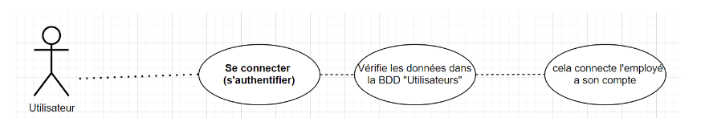
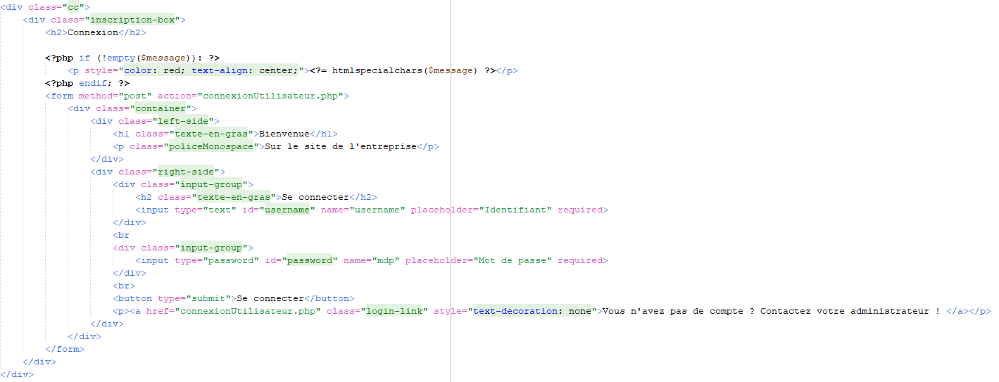
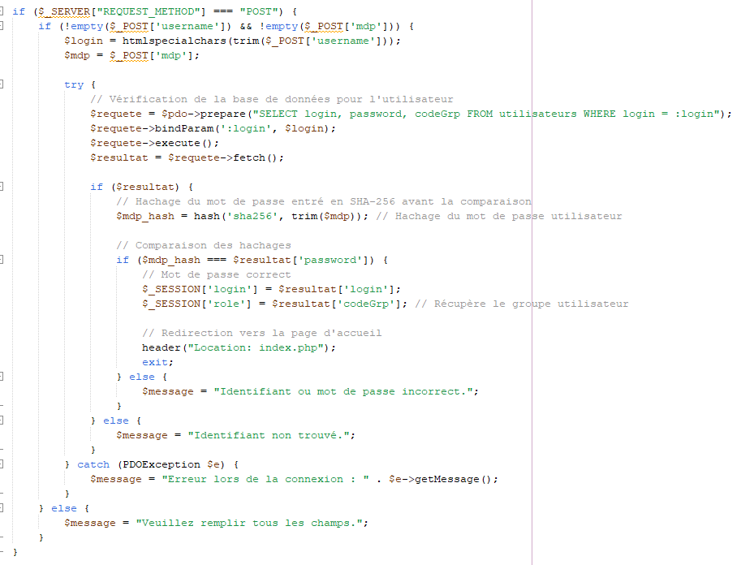
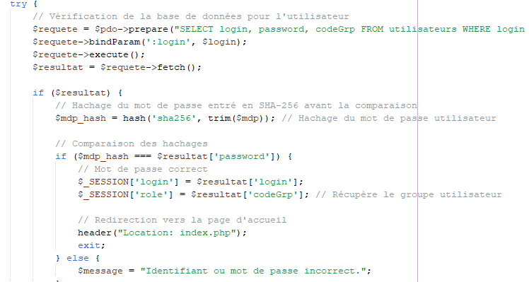
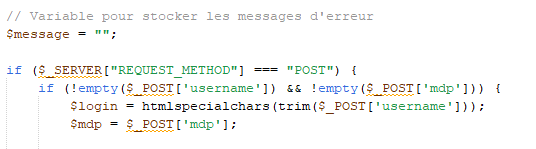
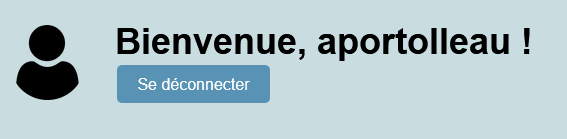
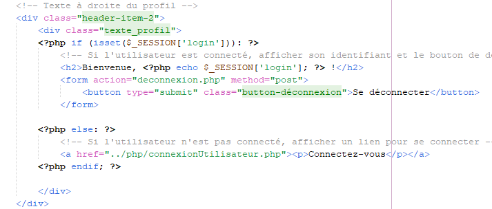
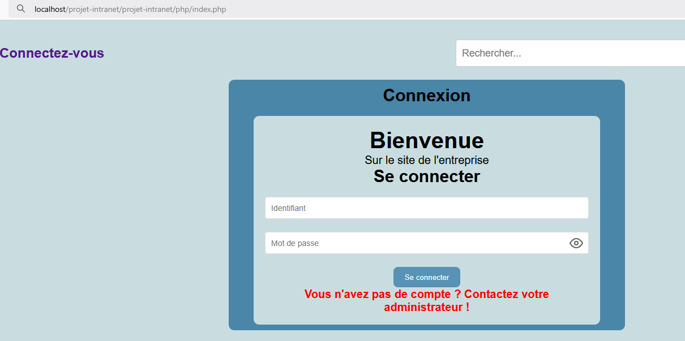

Dans cette mission, nous avons mis en place un système d'authentification pour les utilisateurs, qui comprend la création d'un formulaire de connexion, le hachage des mots de passe en PHP, la gestion des sessions et la protection du tableau de bord.
Nous avons mis à jour notre diagramme UML pour inclure un cas d’utilisation "Authentification". Le processus implique que le système vérifie les identifiants et le mot de passe de l'utilisateur dans la base de données avant de lui accorder l'accès à son compte. Cela s'applique à tous les utilisateurs, y compris les administrateurs.
Voici un exemple de code HTML pour le formulaire de connexion :
Le code PHP qui gère l'authentification de l'utilisateur et vérifie les identifiants dans la base de données avec le mot de passe haché est le suivant :
Nous avons ajouté une redirection vers le tableau de bord après la connexion. Si les informations de connexion sont valides, l'utilisateur est redirigé vers la page d'accueil du tableau de bord :
L'identifiant de l'utilisateur est stocké dans une variable de session pour qu'il puisse rester connecté pendant sa navigation :
Une fois connecté, l'identifiant de l'utilisateur est affiché sur le tableau de bord :
 Le tableau de bord est protégé pour empêcher l'accès par un utilisateur non authentifié. Si l'utilisateur n'est pas connecté, il est redirigé vers la page de connexion :
